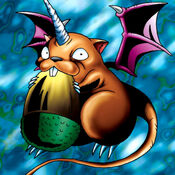

Air Marmot of Nefariousness

Description: "Able to move and attack without triggering an opponent's TRAP (LR)."
STATS
ATK: 400
DEF: 600DECK COST
Deck Cost per Card: 15EFFECT NOT IMPLEMENTED
Fusion List (41 Possible Fusions)
- Air Marmot of Nefariousness + Ancient Elf = Nekogal #2
- Air Marmot of Nefariousness + Bat = Giga-tech Wolf
- Air Marmot of Nefariousness + Bean Soldier = Flower Wolf
- Air Marmot of Nefariousness + Bolt Penguin = Tripwire Beast
- Air Marmot of Nefariousness + Bone Mouse = Shadow Specter
- Air Marmot of Nefariousness + Cyber-Stein = Giga-tech Wolf
- Air Marmot of Nefariousness + Cyber Commander = Dice Armadillo
- Air Marmot of Nefariousness + Cyber Soldier = Dice Armadillo
- Air Marmot of Nefariousness + Dancing Elf = Nekogal #2
- Air Marmot of Nefariousness + Dark Plant = Flower Wolf
- Air Marmot of Nefariousness + Dark Witch = Nekogal #2
- Air Marmot of Nefariousness + Darkworld Thorns = Flower Wolf
- Air Marmot of Nefariousness + Fairywitch = Nekogal #2
- Air Marmot of Nefariousness + Greenkappa = Flower Wolf
- Air Marmot of Nefariousness + Griggle = Flower Wolf
- Air Marmot of Nefariousness + Holograph = Dice Armadillo
- Air Marmot of Nefariousness + Jinzo #7 = Giga-tech Wolf
- Air Marmot of Nefariousness + Kaminarikozou = Tripwire Beast
- Air Marmot of Nefariousness + Key Mace = Nekogal #2
- Air Marmot of Nefariousness + Lady of Faith = Nekogal #2
- Air Marmot of Nefariousness + LaLa Li-oon = Tripwire Beast
- Air Marmot of Nefariousness + Man-Eating Plant = Flower Wolf
- Air Marmot of Nefariousness + Man Eater = Flower Wolf
- Air Marmot of Nefariousness + Mechanical Spider = Giga-tech Wolf
- Air Marmot of Nefariousness + Mega Thunderball = Tripwire Beast
- Air Marmot of Nefariousness + Misairuzame = Rare Fish
- Air Marmot of Nefariousness + Monsturtle = Turtle Tiger
- Air Marmot of Nefariousness + Muse-A = Nekogal #2
- Air Marmot of Nefariousness + Mushroom Man #2 = Tiger Axe
- Air Marmot of Nefariousness + Mushroom Man = Flower Wolf
- Air Marmot of Nefariousness + Mystical Elf = Nekogal #2
- Air Marmot of Nefariousness + Nemuriko = Nekogal #2
- Air Marmot of Nefariousness + Oscillo Hero #2 = Tripwire Beast
- Air Marmot of Nefariousness + Oscillo Hero = Tiger Axe
- Air Marmot of Nefariousness + Princess of Tsurugi = Nekogal #2
- Air Marmot of Nefariousness + Queen's Double = Nekogal #2
- Air Marmot of Nefariousness + Rainbow Flower = Flower Wolf
- Air Marmot of Nefariousness + Skull Servant = Shadow Specter
- Air Marmot of Nefariousness + Water Element = Nekogal #2
- Air Marmot of Nefariousness + Waterdragon Fairy = Nekogal #2
- Air Marmot of Nefariousness + Yashinoki = Flower Wolf